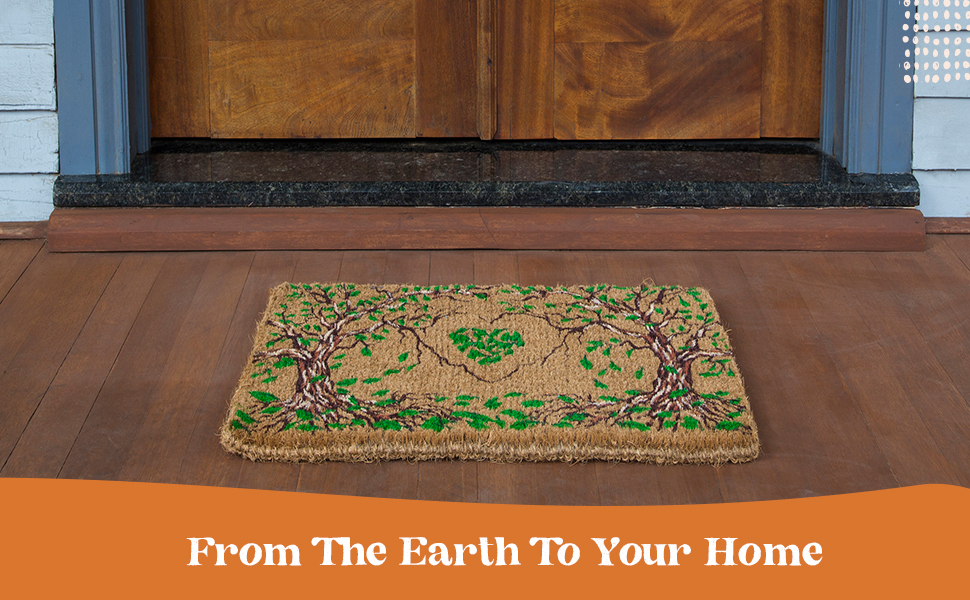
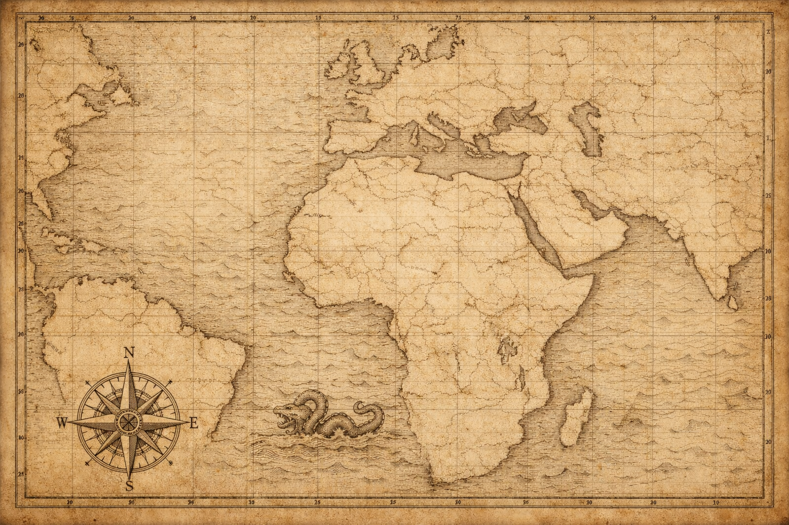
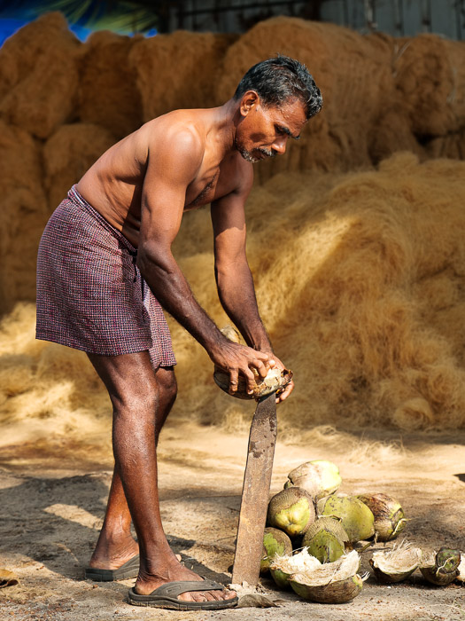
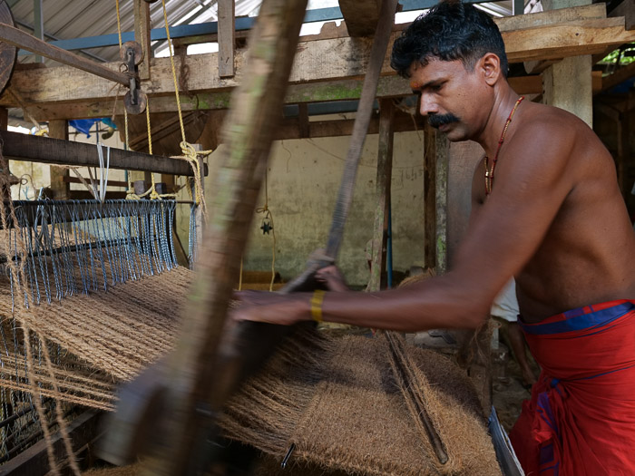
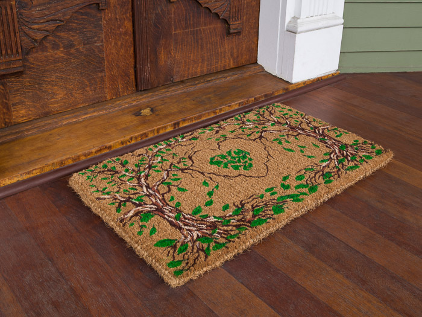
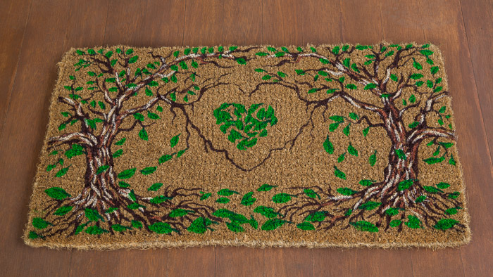
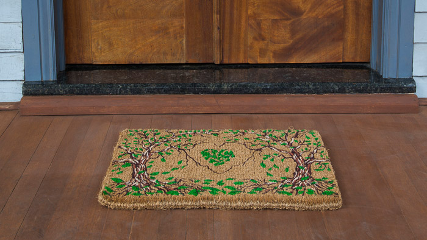

While working full-time as a researcher, I founded a sustainable home goods brand. Inspired by Indian coconut coir mats, I designed eco-friendly doormats made by local artisans in Kochi, India. I sought suppliers who paid higher wages, manufactured by hand loom, and limited environmental impact.


I learned logistics, accounting, marketing, and management and just kept going.







I built it all out, stubbornly, completely. When things broke, I fixed them. When they broke again, I fixed them again. Amazon for sellers breaks a lot. This cycle was pulling me away from where I needed to go. Whether growing a business or sketching a research plan, the melody of creativity always rang clearer to me. Lost and uncertain, I looked up to the clouds and listened. The creative gods were calling out, but what were they offering?